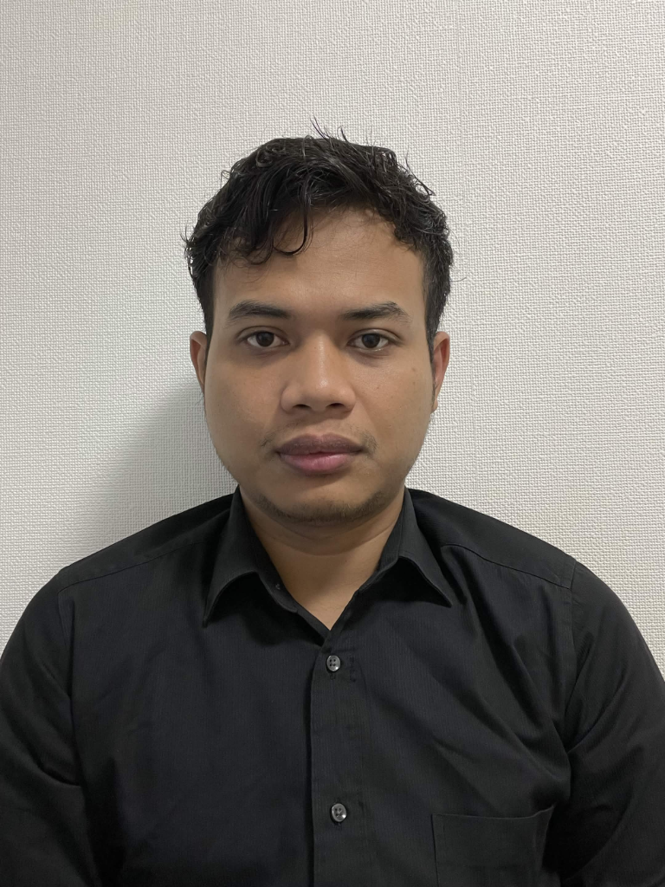

Pesan dan Kesan Project
Frans Siautta
Lumayan seru, karena membuat saya tidak tidur dari kelas kemarin sampai hari ini. Tapi tetap senang karena project sudah berhasil dibuat.
Lihat GitHub
Jakaria
Pesan: Semoga project ini bisa terus dikembangkan menjadi lebih baik dan menarik.
Kesan: Seru dan menantang! Banyak ilmu baru yang didapat, meskipun sempat mengalami kesulitan. Tapi akhirnya project ini berhasil diselesaikan bersama.
Lihat GitHub